This project involves the development of a Python application designed to perform cryptanalysis on two classical ciphers: Vigenère and Affine. Developed within the scope of the Master's in Information Security Engineering, the tool explores vulnerabilities in these historic algorithms using various attack vectors such as Brute Force, Dictionary Attacks, and Known Plaintext Attacks.
python main.py
The application launches via main.py, presenting a stylized ASCII art menu
that directs the user to specific modules for each cipher.
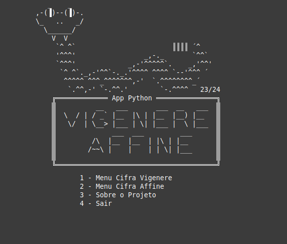
Figure 1.1: Main application menu developed for the project.The project implements three primary strategies to compromise the confidentiality of the messages.
In this method, the attacker ("Eve") attempts every possible key combination until the correct one is found. While exhaustive, it guarantees a solution given enough time.
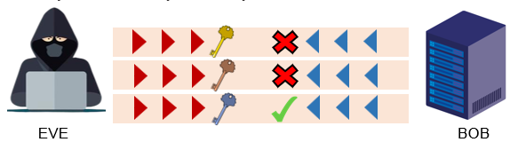
Figure 1.2: Conceptual illustration of a Brute Force Attack.If the attacker knows a portion of the original message (e.g., standard email greetings like "Good morning"), they can mathematically derive the key used for encryption.
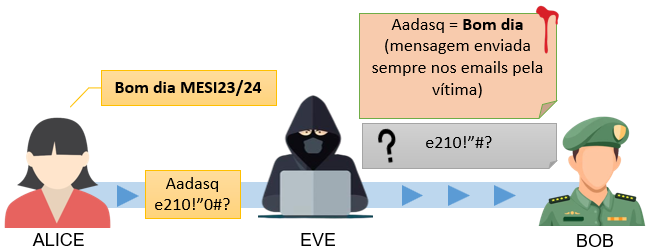
Figure 1.3: Conceptual illustration of a Known Plaintext Attack.The Vigenère cipher is a polyalphabetic substitution method. The application allows users to generate the Vigenère table and visualize the encryption process step-by-step.
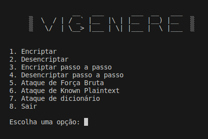
Figure 2.2: Vigenère Cipher Submenu.Visualization: This cipher uses a 26x26 matrix. This tool also generates the table dynamically to aid understanding.
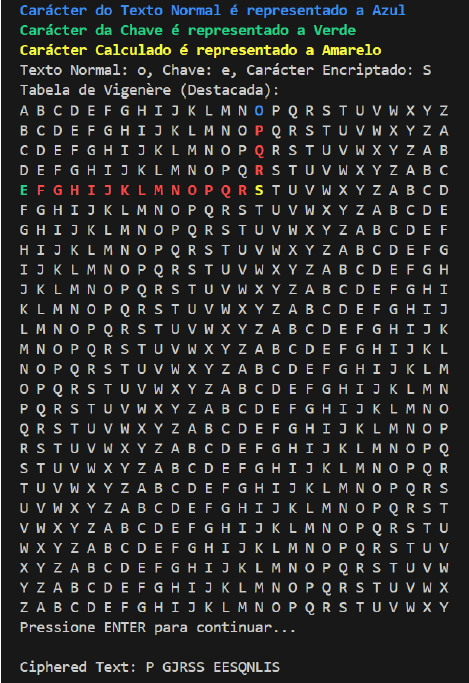
Figure 2.3: Vigenère Table generated by the application.Operations: Standard encryption and decryption. Formula: Ci = (Pi + Kj) mod 26.
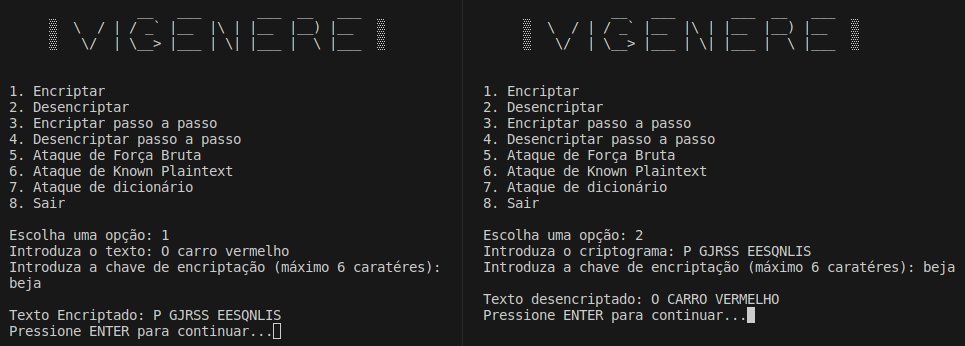
Figure 2.4: Encryption and decryption operations.1. Brute Force: Generates keys recursively (up to length 6) and validates against a dictionary.
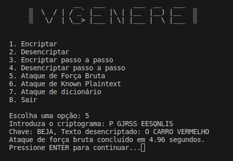
Figure 2.5: Successfully recovering the key "BEJA".2. Known Plaintext: Calculates the offset between the cipher and known text to reveal the key.
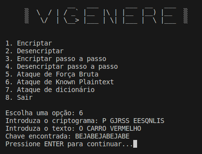
Figure 2.6: Recovering the key using a known text snippet.3. Dictionary Attack: Tests keys from a wordlist, offering faster performance than brute force.
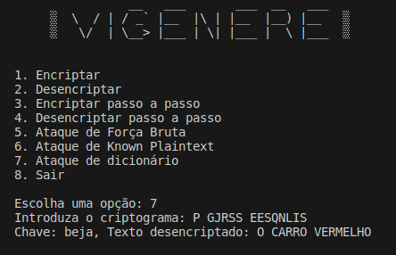
Figure 2.7: Successful Dictionary Attack.The Affine cipher is a monoalphabetic substitution system using linear algebra. Encryption function:
E(x) = (ax + b) mod 26D(x) = a-1(x - b) mod 26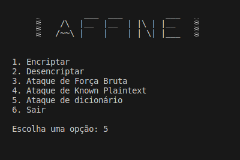
Figure 3.1: Affine Cipher Submenu.Operations: Users must provide keys A (coprime to 26) and B.
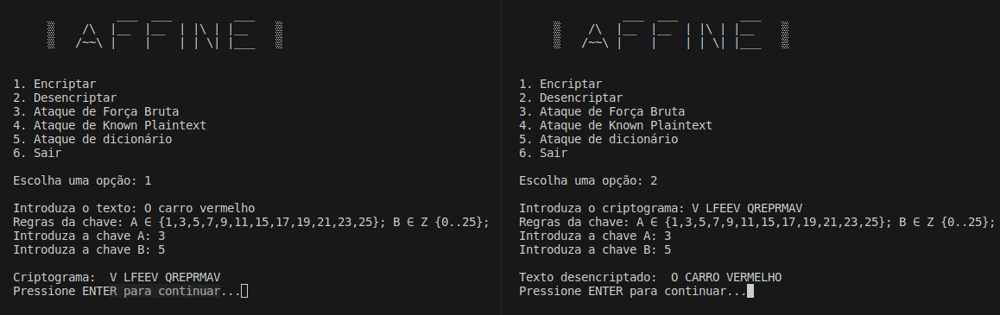
Figure 3.2: Encryption and decryption using Affine.1. Brute Force: Iterates through all possible values of A and B to produce a list of potential plaintexts.
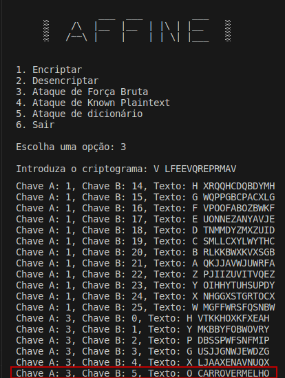
Figure 3.3: Listing all possible decryptions.2. Known Plaintext: Filters brute force results to find messages containing a specific string.
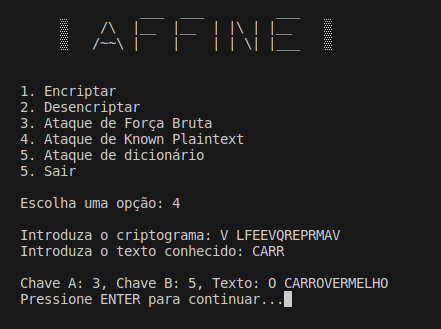
Figure 3.4: Pinpointing the correct message using known text.3. Dictionary Attack: Checks decrypted outputs against the Portuguese wordlist.
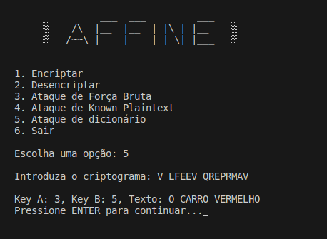
Figure 3.5: Successful Dictionary Attack on Affine.This project successfully demonstrated how to build a Python application to analyze and break Vigenère and Affine ciphers. We explored the mathematical foundations of these systems and implemented practical attacks including Brute Force, Dictionary, and Known Plaintext.
While these classical ciphers are no longer secure for modern use, analyzing them provides essential insights into cryptanalysis. The transition from theoretical math to practical Python code highlighted the importance of computational tools in security. Future work could involve expanding the tool to support larger networks or more complex algorithms.
The security of data is crucial in increasingly complex and dynamic scenarios... continuing to explore robust encryption techniques is fundamental for the future of digital privacy.